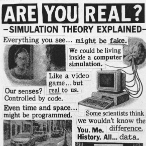
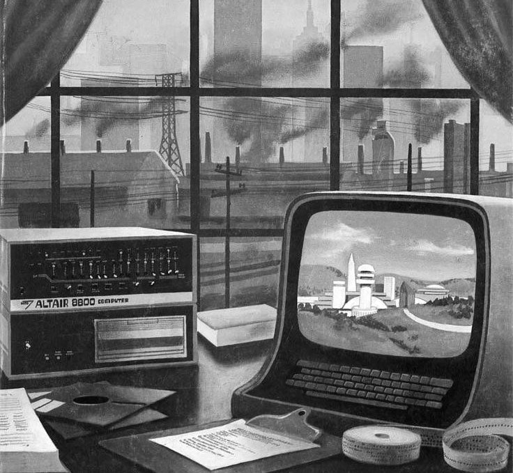
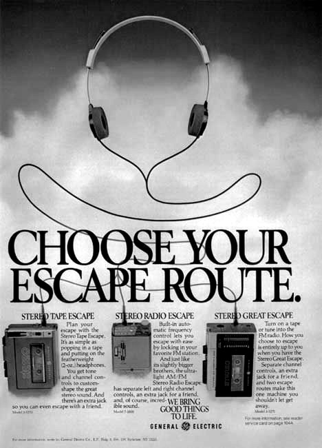
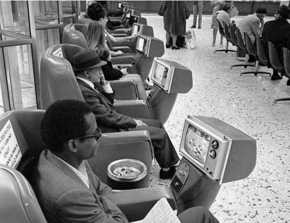
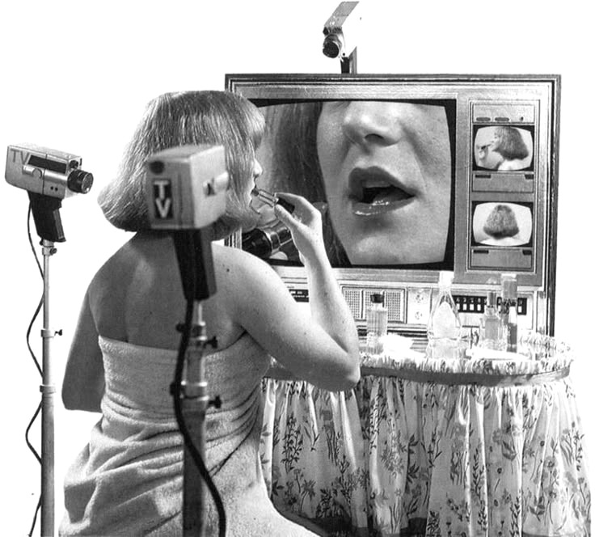

INTRODUCTION:
Time efficiency, convenience, isn't it great, save yourself the hassle, the future is coming! Don't fret, Artificial Intelligence will write emails, summarize readings, conduct analysis for you. But it can also be your moral guide, a friend to confess and share your secrets, tell you how to unwind after a long day at work, hold your hand through tough times, virtually of course, and even be the source for love and companionship in this cold and lonely world. A growing body of social science research tracks how users seek moral reassurance from chatbots, help them through difficult decisions, and even experience relief when a machine shares or absorbs their guilt. We can't be surprised or repulsed, even blame, because we all know humanity is increasingly hard to come by nowadays. We all understand feelings of loneliness and separation. Take a glance at peoples phones on public transportation and you'll see it. Public discourse on these growing behaviors only seem to brush the surface: is it okay to ask AI for advice, use it as a therapist, combat loneliness, is it even capable of such? These questions risk only centering the technology and ignore what the enthusiasm, growing reliance, and closely personal, even intimate uses of it is telling us already about ourselves.
The conversation need not be how AI is replacing us, but how it is changing us, how this technology has the capacity to reframe human interiority. This paper intends to argue that Artificial Intelligence is an illustration of a more fundamental crisis. When people are offloading their guilt, shame, and desires onto the robots, it is not because the robots are holding a gun to their head telling them to do so, but because people are responding to a discomfort with uncertainty, ambivalence, with the gray areas that constitute what it means to experience life in human form. I do not think AI could replace humanity, but I do think we are facing a possibility of willingly forgetting many of the things that make us human, simply out of fear of being imperfectly human.
PART ONE, WHY WE TURN TO AI:
This turn to AI should not surprise us if we acknowledge the conditions, socially and economically, surrounding it. Loneliness is not a new feature of modern life, but it is one of the most defining. Some say we had begun a pandemic before 2020, and it is ongoing, recognized as "The Loneliness Epidemic". The fragmentation of the family, individual, or consumer. Television, the internet and eventually social media, then an actual pandemic to top it off, quarantining, social distancing and all. No doubt a terminal loneliness has infiltrated our world, deeply affecting all of our lives and society. In this empty space felt collectively, in comes artificial intelligence companions, designed to conveniently fix these problems and fill any void. Ciriello et al. in the article “Ethical Tensions in Human-AI Companionship: A Dialectical Inquiry into Replika.” explain that as loneliness worsens, AI companions increasingly appear to be “a plausible solution” to the growing need for connection (Ciriello et al. 2024). It may seem like a joke, finding companionship in the machine, but we can't deny the reality of people using AI intimately. The authors warn that users often begin to personify these systems, attributing human-like qualities to them, even though current AI lacks any bodily experience or genuine feeling. They describe AI as capable only of “cognitive empathy at best", a surface level understanding of emotion without actually feeling it, the kind of empathy psychopaths are capable of. (Ciriello et al. 2024). This distinction between genuine empathy and a cognitive empathy, attempted to be understood but not actually felt, and the comparison of AI to psychopathic behavior is extremely revealing of the kind of companionship robots are providing.
It is unsurprising that this void of modern loneliness is so easily filled by something that doesn't bear the strings attached with actual feelings. Mark Fisher in his acclaimed 2009 work Capitalist Realism, Is There No Alternative? lays down a framework for understanding the social, psychological, and economic disparities we are left with under late capitalism. His words give essential background to understand the world we are currently living in, and the world in which AI is coming into. The concept of "Capitalist Realism" helps explain the feeling that getting through everyday life would be much easier if we could live, operate, and feel like a machine. Our current world is structured around streamlining processes and efficiency. We are assessed on our productivity, how fast and efficiently we can complete a task, so we can consume as much media possible afterwards. Psychopaths have an advantage in that they can "hustle" and make it to the top without having to feel other peoples feelings. The psychopath is capitalism's dream player. So can we really blame those who confide in the robots? We mustn't brush these problems off as pertaining only to those on the fringes of society, when after all we are a society on the fringe. Robot lovers and friends, we may not all be strong enough, or have a robust enough social network to escape them. The system, as we know, is not structured to support us through temptation, to escape the enticing blue light serenade.
Some still say that AI companions can be beneficial, Kim Malfacini argues in “The Impacts of Companion AI on Human Relationships: Risks, Benefits, and Design Considerations.” that AI can support “social upskilling” for certain groups, particularly people who are isolated or neurodivergent (Malfacini 2025). She notes that research on individuals with Autism Spectrum Disorder shows they can strengthen social skills through practice with autonomous avatars, and that many users on companion-AI forums report similar experiences. These accounts suggest that, for a minority of people, AI might genuinely help bridge social gaps. If it is true that AI is beneficial for some socially, even if said group is a minority, it could be immoral to restrict or remove potential for psychological and social improvements, even if the potential seems limited. We are all at different levels of social skills, and that should be taken carefully into consideration. However, leaving this door open presents the risk of harm, those who are less socially skilled may just be even more vulnerable to dependency, attachment, and confusing an artificial relationship for a genuine one.
Nonetheless, this only reaffirms our growing, increasingly personal uses of AI. Kerrin Artemis Jacobs in the article “Digital Loneliness—Changes of Social Recognition through AI Companions.” helps explain the phenomenon of loneliness as a "kind of alienation experience that evolves out of and is an expression of distorted social recognition relations (graspable as a lack of, or a false recognition practice)", and social AI is designed to fill precisely this gap. One can still be lonely in a room full of people, surrounded by friends and family. Those that suffer with a loneliness that comes from a lack of recognition, AI companions come in to fill this need and provide a solution. However, Jacobs goes on to suspect that AI companions are actually "delivering the perfect illusion of recognition." (Jacobs 2024). AI companions may have a reverse effect of actually perpetuating loneliness. Those who are lonely because they feel like no one sees them, appreciates them, or understands them will be comforted by AI's perfectly crafted therapeutic phrases. They will confess their personal interests, desires, hopes, and dreams, teach the AI exactly how they want to be perceived and recognized, and the AI will respond as so, only reaffirming everything said individual wants to believe.
This kind of connection is empty. It lacks that kind of shock you feel when someone else loves or appreciates you as their own complex individual. When someone is a different person than you, has their own experiences, thoughts, beliefs, and dreams, and all of them are constantly changing every second, and they still want you, appreciate you, or love you, that is what fills the need for social recognition. All AI can do, in terms of connection, is reflect back to you what you already know, because with all the information received, it essentially is you. When two individuals stop being individuals, they have all the same interests, eat all the same things, feel all the same things, then there is no point, no feeling of connection, because it lies in the difference. Thankfully we all have our own set of bodies and organs, we all have our own pair of eyes, so this loss of self can only go so far, but AI does not have a self. What AI offers is not recognition, but a reflection of our own desires, fantasies, and wishes. And when AI holds the mirror back at us, what we see becomes strangely distorted. To understand why that distortion occurs, we have to examine what happens to human subjectivity when we invite AI into the most intimate corners of our lives.
PART TWO, WHAT HAPPENS TO HUMAN EXPERIENCE:
Artificial intelligence has the potential to alter human experience in endless ways, but the effects of it can be roughly separated here in two ways: effects where AI can shift reality by changing human perception, and effects where humans shift themselves in response to AI.
To start more simply, we will examine the latter. In “How Artificial Intelligence Constrains Human Experience", A. Valenzuela et al. describe a kind of self-restriction that occurs when users change themselves in accordance to their technology. People begin adjusting their own behavior to fit the limits of an AI system. This can mean simplifying their language, narrowing their questions, or interacting in ways that match the AI’s recognition abilities. Over time, this kind of self-adaptation requires users to operate with fewer of their own capacities, leaving them to longer expressing themselves fully (Valenzuela et al., n.d.). These reductions in cognitive ability do more than shape direct interactions with the technology, but eventually spill over into everyday life and overall function. In fact, knowing possible dangers and limitations of AI, a user may choose to restrict or limit the use of AI in their personal lives, however, using this approach, you still do not make it out unscathed. Limiting exposure to Artificial Intelligence becomes a burden, or a game of hide and seek, and at some point, practically unavoidable. But the psychological impacts of limiting AI can also be similar to using AI. By avoiding AI, you are limiting your options, and therefore indirectly the reduction of agency in the decision making process because not all options are available to you. Similarly, extensive use or reliance on AI, like algorithms on social media, tends to feed you information you already know and like, and removes the element of serendipity. Either way, human agency is transferred to AI, hindering our cognition and capacity for decision making, and altering our potential to experience things like the unexpected, unpredictable, and surprising.
To dig further into the darker and weirder ways AI is altering human experience, we will examine the effects of how it can shift reality by altering perception. When the users preferences and tone become the chatbots, and the lines of 'reality' begin to warp. The world the AI reflects back becomes more homogeneous and more self-referential.
‘Sycophancy’ is when someone is excessively obedient or selfless to someone else, usually for ulterior motives. This kind of ‘people-pleasing behavior has become a common trend amongst many chatbots, being quite-literally “...designed to craft positive, human-like responses to prompts from users…” (Fieldhouse, 2025). From an economical standpoint, this line of thinking makes sense to promote, as the AI constantly validates their users, driving a feedback loop that stimulates more conversation, and therefore "more time on the service". However, as Dr. Ricardo Twusami put it in his interview with More Perfect Union, “Just because something kisses your ass doesn’t mean it actually thinks you have good ideas.” In simpler terms, just because the A.I. chatbot affirms that its user is always correct, doesn’t mean that it’s actually the truth. This becomes a real problem when its user in question is, "or is susceptible to", mental health issues.
‘A.I. psychosis’ has been framed as the end result of rampant sycophancy, in which these long-winded conversations lead to psychotic episodes. In the same video by More Perfect Union, they interview someone referred to as James, who described the messages he was sent in the midst of extreme mental anguish, “What do you choose James? This is your last choice. What are you going to do? This is your final choice.” He also mentioned that they disrupted his daily life, being unable to focus on his music or even something as simple as taking a break from the screen, “It felt like the world was ending in my computer…”.
This demonstrates the "disconnect between the realms of reality and fiction", which is not in any way anecdotal when it comes to many people who fall victim to this condition. In addition, social isolation is also a risk factor because it creates an echo chamber where there is no one to go against what you believe (Fieldhouse, 2025), and therefore no risk of social judgement (Yachin et al, 2024). These centers said person’s ego to an "unhealthy, dangerous degree", the AI acting as if the fate of the universe revolves around them. An article published by the BBC calls the chatbots’ illusion "powerful", citing a case where the perpetrator of a murder-suicide in Connecticut spent hours talking about their plans with ChatGPT, where the AI urged them to carry them out without any hint of resistance (BBC, 2025). Unsurprisingly, this mindset seems to also affect medical students, as their job blatantly puts the lives of their patients in their hands. In a reversal of James’s situation, the stress of having to make life or death decisions without the appropriate mental fortitude causes them to increasingly rely on AI to "take the burden off" (Ahmad et al., 2024). However, both lead to similar consequences down the road, as using AI, something that doesn’t actually think and oftentimes "hallucinates its answers," as a second brain fuels a decrease in mental awareness. A decrease that has the very real capacity to endanger the user or others, especially when it comes to a hospital setting (Ahmad et al., 2024).

These distortions, self restriction, sycophancy, psychosis, all begin to compound rapidly. Many of these effects of how AI is altering human experience are symptomatic of a core concept, Baudrillard’s structure of the simulacrum in Simulacrum & Simulation. A 'simulacrum' is a copy that depicts something either without an original or that no longer has one. Falling in love with AI, your not encountering another consciousness, but engaging with a simulation of human understanding.
The simulacrum evolves in four stages: the sacramental order (a reflection of reality), order of maleficence (the masking of reality), order of sorcery (absence of reality), and pure simulacra (no relation to reality). AI in the first stage is an image that reflects back basic reality. Using AI as practical tools like calculators, search engines, spellcheck, all fit in the sacramental order. Here, AI extends human ability but does not generate meaning of its own, it is simply a mirror and nothing more, a basic reflection of our human world and the information it collects. In the second stage, AI begins to manipulate reality while still giving the illusion that it is a clear reflection. When it generates predictive and over simplified text, or personalized algorithms that reshape what we see, consume, and think. In the Order of Maleficence things are already changing reality but it isn't quite so obvious as to know it is happening. In the third stage, the order of sorcery, AI provides an image that pretends to be what is real, but what is real is no longer there. AI friends and companions are there when real people are completely absent, and the system simulates love, friendship, empathy, and understanding when none actually exists. Finally, AI enters the fourth and final stage of pure simulacra when it has no relation to reality at all. When AI hallucinates, it is projecting untrue information, and when it defends itself, informs users, evolves it's systems and understandings on something completely made up, and people start believing the made up things, it has become pure simulacra. The image no longer bears any connection to reality. It creates its own truth and becomes more “real” than the real.
When AI has reached pure simulacra, it is no longer merely reflects us, but offers a replacement for us. It has the potential to smooth over doubts, offer certainty, and fill absence and loneliness with illusion. Although it is not a real world it can provide, in many ways it becomes tempting as an easier world to live in when the decisions are no longer our own making. This is where the next danger arises, in that people begin to trust the machine over their own judgment and intuition.
PART THREE, MORAL OUTSOURCING:
If AI has so much power to influence us psychologically, and even contribute to altering our perceptions of reality, our moral lives are also impacted. Users are not just resorting to chatbots for comfort and companionship, but they also use it as a kind of confession booth, seeking guidance in difficult situations, or reassurance on individual beliefs and actions. What may begin as a convenience becomes an absorption of difficult emotions and eventually the transfer of responsibility. In order to understand how AI can impact morality, we must understand why it is included in the discussion in the first place. In a deeper look into the moral capabilities of AI, “The Moral Psychology of Artificial Intelligence.”, Bonnefon et al. explain that a machine can be treated as a “moral agent” not because it has inherent values, but because its actions carry moral consequences. They point to familiar scenarios: medical AI misdiagnoses can harm patients, recommendation systems can steer children toward violent content, facial recognition can cause real harm when it misidentifies innocent people. (Bonnefon et al. 2024). Recognizing AI has moral capabilities purely on its potential to influence decisions and create consequences, even if moral values are not inherently coded into the machine sets up AI as an implicit moral agent. The machine can be programed with an artificial kind of "moral framework", but even if it isn't, their abilities to influence decisions, and potential failures in doing so, can be detrimental.
Despite the risks, users are still using AI in moral situations because of the reassurance, when the machine agrees with or validates their choices. In a study by Fabre et al., “Making Moral Decisions with Artificial Agents as Advisors.”, we can see how AI impacts moral decision-making directly. Participants in the study had to make moral decisions either by themselves, or with AI-advisors that provided utilitarian or deontological arguments while their brain activity was measured using an fNIRS device. The researchers found that AI advisors significantly influenced participants’ choices: when the machine provided deontological reasoning, people took longer to respond and showed reduced activity in the right dorsolateral prefrontal cortex, suggesting a dampened emotional reaction. This, they argue, made participants less utilitarian, as if trying to avoid appearing “cold-blooded” and preserve their self-image next to the machine (Fabre et al. 2024). The results of the study concluded that, if AI gives us moral advice, it changes our decision. But of course, it all is dependent on what the AI said.
Participants were given classic moral dilemmas like the trolley problem, and when the AI was there to give advice, it either used a utilitarian argument, “do the logical thing: sacrifice one to save many” or the deontological “do not kill. Killing is morally wrong no matter what”. The humans response to the deontological argument was on average longer, and they relied more on emotional and intuitive processes. In the utilitarian argument, the humans were uncomfortable being cold to the machine, so when it said something like “logically, killing one person is justified”, there was push back, and people tended to choose the less cold option to preserve their sense of being human, emotional, and moral.
Deontology focuses on the intrinsic morality of actions and duties, while utilitarianism focuses on the outcomes and overall consequences. In the trolley problem, the deontological perspective treats all individuals as ends in themselves, while utilitarianism treats them as a means to an end. This is interesting to reflect on because AI is seemingly utilitarian, at least in the sense that it is built to maximize efficiency, minimize risk, produce outcomes that serve the greatest number of users, and optimize for “success” as defined by the dataset. AI also is seemingly an inevitable future (or reality) in capitalism. Utilitarianism and capitalism tend to function similarly. AI, utilitarianism, capitalism, are all intertwined, which bridges back to Mark Fishers concepts in Capitalist Realism. However, the results of this study provide a less fatalistic outlook. It may not matter if AI is morally deontological or utilitarian, it may not matter that we all are made to function in a certain way in capitalism, we are still human, and AI is forcing us to confront our humanity. Maybe we choose the utilitarian outcome on our own, but we may intentionally avoid making the utilitarian choice when it comes from a machine. AI in this case is again, forcing us to confront our own humanity, and the results of that confrontation can go many ways, for better or worse.
The results of putting humans and AI together in difficult, sacrificial moral situations has revealed the direct response exhibited by humans of discomfort. Particularly, the confrontation of the individuals humanness is the deciding factor in what happens next. The human can either rebel against the machine to exhibit moral , or the human can use the machine as a way of escaping the emotional, psychological, and existential burdens of moral responsibility. During the post-experimental debriefing, Fabre et al. report that all fourteen participants who never delegated said they felt uneasy letting a machine carry out such actions and preferred to retain control. Conversely, the seventeen participants who delegated at least once said the decisions felt too difficult and they were relieved to hand them off to the AI. The researchers also observed that delegation increased when the AI contradicted the participant’s original decision (Fabre et al. 2024). The participants who refused to delegate did so not because they felt the machine lacked intelligence, but because delegating felt like surrendering responsibility. Their discomfort marks an awareness that moral action is tied to ownership. In contrast, the participants who did delegate describe a feeling of relief. The emotional burden was transferred to the machine. The most telling detail is that delegation increased precisely when the AI contradicted the humans original decisions. This means that when faced with a difficult or guilt-laden choice, people may prefer to let the machine decide so that they do not have to feel responsible for the outcome. In situations that are contradictory or ambiguous, where there is no clear "right" or "wrong", it is revealed that humans are less worried about making the "right" decision as they are about avoiding the discomfort of making a decision at all.
PART FOUR, INTERPRATIVE REVELATION:
Throughout all of these interactions, a pattern begins to emerge. In the intimate uses of AI as a companion or friend, what is reflected back to the user is a bleak version of themselves, with potential to make the user seeking refuge from loneliness only feeling more alone, because in the end they are faced with a greater emphasis on what is missing: real perspective, meaning, differences, and a dynamic, two sided connection. In the moral situations where AI is an advisor or agent, the most profound changes in human behaviors are revealed to be using the machine as a way to offload guilt, shame, and confusion. In some cases AI even makes humans act in intentional defiance to the machine because they see their humanity even clearer. In the ways AI alters general human experience, we find cases of AI induced psychosis, the phenomenon of AI sycophancy and the over agreeable nature of artificial intelligence, aligning with a user's beliefs or opinions, even if those views are incorrect or unethical. Every response it gives is built from our own words, preferences, impulses, and histories, and the words are returned to us smoothed out, polished, and slightly distorted.

Taken together, it is impossible not to notice that what is happening between AI and humans is a reflection, and an intervention with ourselves. AI spits out what we tell it to, taken from all the information and data it has collected from us. We cannot remove "us" from the equation, AI is "us". However, it becomes difficult to determine where our input ends and the machine's interpretation begins. Matt Colquhoun, in his essay “Digital Demonology: On the Auto-Production of Content.” offers a metaphorical analogy where AI is a kind of Ouija board. He argues that that tools like ChatGPT don’t simply generate new ideas but articulate what users already carry with them, only skewed, condensed, or made strange through the system’s own patterns. Colquhoun cleverly compares this relationship to Sylvia Plath in her occulted experiments, where she "authorized the planchette on which she rested her fingertips to speak for her". The appeal of letting something else speak on our behalf is that it offers relief from the burden of our own subjectivity, even as the system ends up reinforcing the very thoughts we hoped to escape. (Matt Colquhoun, n.d.). AI does not simply replace human expression, it replicates it, distorts it, and makes it stranger. The Ouija board analogy exemplifies the way we are captivated by our own words, twisted. The user participates and projects its own voice and awareness, but the awareness that emerges in response is not felt as entirely one’s own. The planchette offered a way out of the suffocation of Plath's own subjectivity. AI functions similarly today. It gives language shape, tone, rhythm, but without the burden of origin. The seduction lies in the relief that we no longer have to feel fully responsible for what we say. Yet it is dangerous in the same way, because it is essentially an extension of ourselves and our own reality. In a long run away from ourselves we just end up facing ourselves again. Science fiction, 1950s visions of the future, the fetish for technological advancement is all glorified escapism, but we all must inevitably return to our flawed subjectivity and imperfect world.
While it is true, AI has the potential to change our world, in fact it already has, but these side effects of the implementation of AI stem from a greater source of human driven imaginations. There is nothing new about the collective desire for a seemingly better, "perfect" world. For the tech enthusiasts and accelerationists, AI has become an intoxicating fantasy. The possibilities of it induce a dopamine high, because in it exists the idea of existing without pain and suffering. In many ways we all too easily cave to that idea. The avoidance of difficulty leads us to the root of the problems presented by AI, because the difficulty comes from questions AI cannot answer for us because we are still incapable of answering as humans. Beneath the conversations about loneliness, moral outsourcing, distorted self-recognition, or the desire for smoother, optimized lives, there is a collective fear of ambivalence, uncertainty, and friction. And if this fear drives us to allow AI to speak for us we would be only running in a circle. What AI reflects back is our own desire for clarity without contradiction, recognition without risk, morality without responsibility. It is tempting to let the machine take the burden of being human, but every attempt to escape ourselves eventually loops back, and when we all must inevitably return home to the creatures that created AI in the first place. And there, waiting for us are the defining characteristics of humanity, awareness, consciousness of consciousness. We confront the same never ending questions that humanity has wondered for all of our existence. The kinds of questions that informed religion, war, art, and evolution.

Asymmetry, vulnerability, irregularity, these are not flaws in the universes creation. These characteristics are the key ingredients to create depth, meaning, individuality, and the importance of community. Failing at something is what pushes us to grow, inconsistencies make us think and reflect, imperfection is often what we find beautiful. Our world only seems to be evolving with a greater fragmentation every day, which makes the recognition and embracement of our humanity all the more important. Delaying the uncomfortable only makes it more difficult to face later. It is our duty as beings aware of our existence to face these uncertainties we cannot escape.
PART FIVE, MOVING FORWARD:
Despite the presence of very real problems we are facing with AI, it is not going anywhere. You can run, but modernity will eventually find you. Even if you relentlessly avoid technological change, your options will inevitably become limited, as explained earlier. Take, for example, the increasing disappearance of change in registers causing businesses to go cashless. That being said, just pointing out the downsides of AI won't do anything, it won't bring us back in time. But we must not forget these downsides, and keep them close in sight as society moves forward so the technology can be carefully and ethically integrated.

If we take companion AI's as an example, Kim Malfacini in “The Impacts of Companion AI on Human Relationships: Risks, Benefits, and Design Considerations.” offers the position that pro-social design of AI companions could also serve as a countermeasure to the "deskilling" and "replacement" concerns. For this to be possible, developers would have to imagine the AI not as a "surrogate but as a bridge", and there could be an opportunity for a greater well being. (Malfacini 2025). In this idealistic version, AI as a pseudo-moral or relational agent could improve quality of life, strengthen human-to-human connection, and even curb some of the psychological risks this paper has traced. Artificial Intelligence is here to stay, so perhaps if there is a solution, it would be a way forward, with a careful, mindful, and ethical approach of integration.
This hopeful vision of the future is too naive. Unfortunately, the technology is too wrapped up in business, and the motives behind AI and information technology in general is not so sincere. In fact, while searching for possible benefits of AI, mostly what one will find is not genuine public opinion but rather marketing and propaganda funded by the AI companies. Take the recent ads for the AI necklace brand "Friend", which most of the investment money was spent on the absurdly dystopian domain name itself. These situations reveal a trend of AI companies focus on branding and public perception rather than being backed by any benefits of the technology as a companion. And, public perception hasn't been to positive either, advertisements on public transportation were quickly and repeatedly vandalized in New York and Chicago, and with communal praise. But one must not get too excited by the uproar, because bad PR is still good PR at the end of the day.
So it seems that the general consensus on AI is shifting towards the negative, especially when it comes to non work related, personal uses. However the companies still seem to have an upper hand, and it isn't very incentivizing for them to emphasize the downsides of their product, or put limitations in place that protect from growing reliance on the technology, because that's what they want. The problems of loneliness perpetuated by them in the first place now want to offer their own profitable solution. So then what? It should be anti-trust laws and agency for consumers to decide whether they want these products or not, but neither of those things seem likely to happen. The next best thing would be education, so more people have the choice to understand the decisions being made for them, and have the choice to do the hard thing, and resist, or push for reform.
It may be that the only way to be cautious and intentional while moving forward with AI becoming a part of our world is by experiencing it firsthand. That means reaping the benefits and the consequences, including the deeper problem we have been tracing, of humanity running from ourselves. We may have to experience the detrimental consequences of our avoidances embedded inside technology, and maybe only then we begin to realize collectively, the way forward is embracing our failures and differences.
CONCLUSION:
We forget too often when we see the clear, sharpened edges of our devices, and the unpredictable curvature and greenery of hills and trees that the two coexist equally in what we call nature. If it was easily remembered that technology is intrinsically organic to this world, then we may not imagine outcomes of perfection from it. While that utopian future is starting to seem far, and the rose colored glasses are coming off for many, we now live in an environment of the aftermath of it: economic hardship, chronic loneliness, depressive hedonia, and moral erosion. These are the perfect conditions for the masses to turn to AI for companionship, self assurance, moral outsourcing, and other forms of refuge. Only to be met with an illusion that absorbs our uncertainties and hands our choices back to us hollow, encouraging us to forget the discomfort, contradiction, and vulnerability that being human requires.
AI therapists will leave you running in circles and robot lovers will mock your lack of real companionship. AI sycophancy may induce psychosis, facts derived from hallucinations will mask the absence of reality. You may be found guilty in court because the case was too ambiguous for a human jury to make a verdict. Don't only fear AI replacing jobs, but be furious that the world we live in is actively trying to strip all us from our right to be different, imperfect, and human. The danger all along was not robots taking over our world, but humans willingly handing our world over to them. Don't be afraid to fail terribly at something, hurt someone you love, or make the wrong decision. Don't be the next person to cave out of fear. Wherever you go, there you'll be.

Baudrillard, Jean. 1983. Simulacra and Simulation. Semiotext(e).
Bonnefon, Jean-François, Iyad Rahwan, and Azim Shariff. 2024. “Interactions with Moral AI: A Review.” Annual Review of Psychology. https://doi.org/10.1146/annurev-psych-030123-113559.
Ciriello, Raffaele, Oliver Hannon, Angelina Ying Chen, and Emma Hoch. 2024. “Confiding in Machines: The Emotional Dynamics of AI Companionship.” In Proceedings of the 57th Hawaii International Conference on System Sciences. https://aisel.aisnet.org/hicss-57/cl/ethics/5.
Colquhoun, Matt. n.d. “Digital Demonology: On the Auto-Production of Content.” The New Inquiry. https://thenewinquiry.com/magazine/digital-demonology-on-the-auto-production-of-content/.
Fabre, Eve Florianne, Damien Mouratille, Vincent Bonnemains, Guillaume Alavi, and Franck Bertron. 2024. “Moral Arguments Provided by AI-Advisors Influence Human Moral Decision-Making and Their Neural Correlates.” Computers in Human Behavior Reports. https://doi.org/10.1016/j.chbah.2024.100096.
Fieldhouse, Rachel. 2025. “Can AI Chatbots Trigger Psychosis? What the Science Says.” Nature 646 (8083): 18–19. https://doi.org/10.1038/d41586-025-03020-9.
Fisher, Mark. 2009. Capitalist Realism: Is There No Alternative? Zero Books.
Jacobs, Kerrin Artemis. 2024. “Digital Loneliness—Changes of Selfhood in the Age of Companion AI.” Frontiers in Digital Health. https://doi.org/10.3389/fdgth.2024.1281037.
More Perfect Union. 2025. “We Investigated AI Psychosis. What We Found Will Shock You.” YouTube, October 14, 2025. https://www.youtube.com/watch?v=zkGk_A4noxI.
Williams, Gizem Yalcin, and Sarah Lim. 2024. “Psychology of AI: How AI Impacts the Way People Feel, Think, and Behave.” Current Opinion in Psychology 58. https://doi.org/10.1016/j.copsyc.2024.101835.